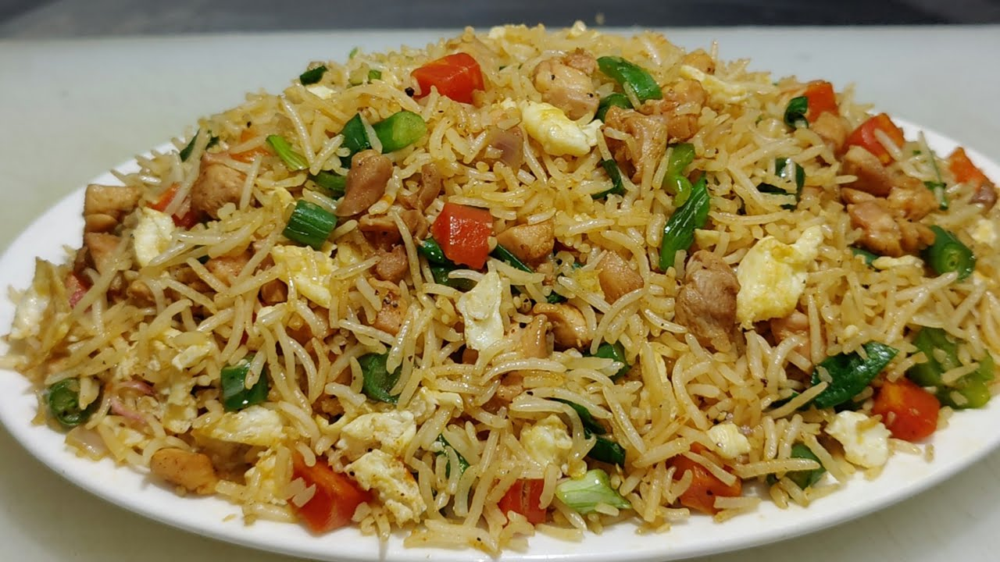

Recipe for Fried rice

Description
Fried Rice is a dish of cooked rice that has been stir-fried in a wok or frying pan and is usually mixed with other
ingredients such as meat,seafood,eggs and vegetable
Fried rice is a popular component of east asian,southeast asian and certain south asian cuisiens and fried rice is typically made with left over ingredients thus
variations in the dish across various cuisiens
Ingredients Required
- 2 tbsp oil
- 2 cloves of garlic (finely chopped )
- 1/2 onion ( finely chopped )
- 4 tbsp of spring onion ( chopped )
- 1/4 carrot ( finely chopped )
- 2 tbsp of cabbage ( finely chopped )
- 2 tbsp of peas
- 3/4 tbsp of salt
- 1 tbsp vinegar
- 2 tbsp soy sauce
- 1 tsp pepper
Preparations
- firstly, in a large wok heat 2 tbsp oil and stir-fry 2 clove garlic.
- saute ½ onion and 2 tbsp spring onion.
- add vegetables of your choice like ¼ carrot, 2 tbsp cabbage, 2 tbsp peas, 5 beans, ¼ capsicum and ½ tsp salt.
- stir fry on high flame without overcooking vegetables.
- now add 2 tbsp soy sauce and 1 tbsp vinegar. stir-fry until the sauce is combined well.
- add 1 tsp pepper and ¼ tsp salt. adjust the salt as soy sauce has salt.